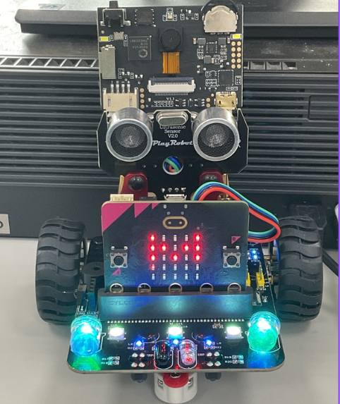
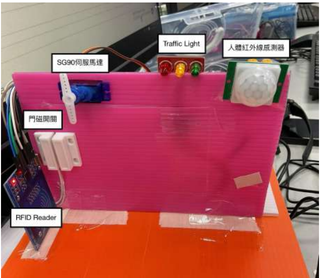
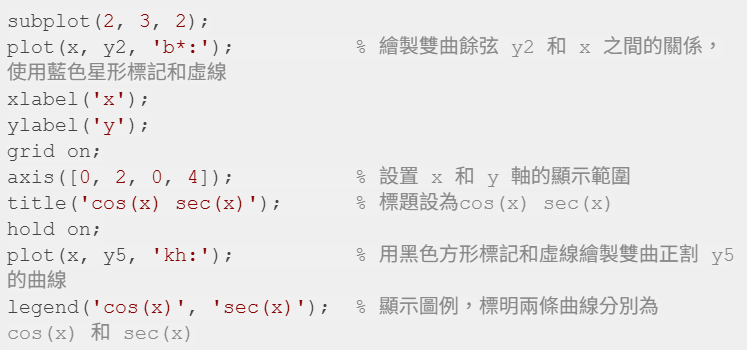
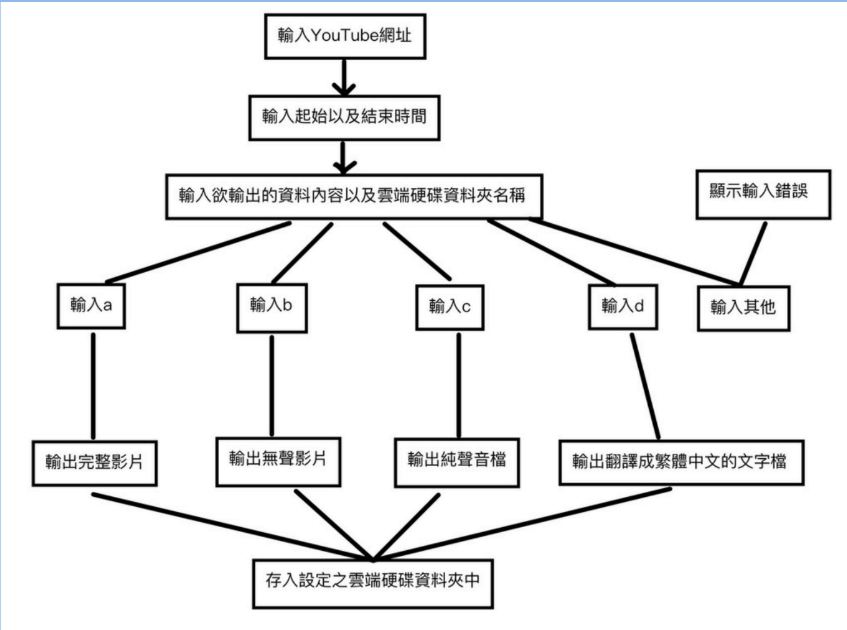

學習成果

英文學習歷程
英文學習歷程
紀錄英文的讀書方法以及最終成效，並積極參與課外英文活動以提升日常英文的應用能力

高一下 AI機器人
高一下 AI機器人
初探程式運作邏輯，學習機器人控制與基礎演算法。

高二上 自動門鎖
高二上 自動門鎖
學習C++基礎用法以及Arduino與各種傳感氣的連棟，並結合物聯網概念，實作自動控制系統。

MATLAB Deep Network Designer
MATLAB：Deep Network Designer
運用 MATLAB 工具設計深度學習網路架構，理解卷積神經網路的底層邏輯。

高二下 Python
高二下 Python
學習Python基本語法，並探索 Python 在數據處理與自動化中的應用。